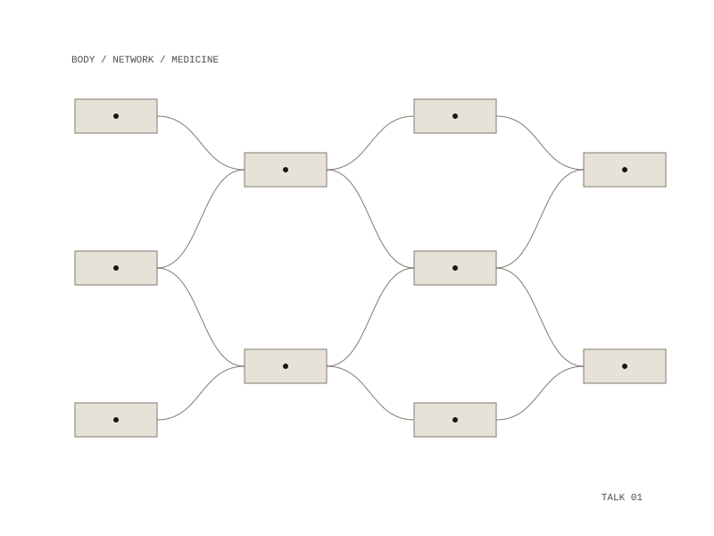

25 / project
Herbal Medicine for Self-Sovereignty
A talk at Hackers On Planet Earth
Herbal medicine for the people who keep networks running, given at Hackers On Planet Earth in 2025 and 2026.

Why there
The talk comes out of the practice of Mugworts Free Herbal Clinic, which exists to give people agency over their own bodies and health choices. Taking it to a hacker conference puts two literacies in the same room: knowing how to keep a network running, and knowing how to keep a body running. Both are infrastructure a person or a community can hold for itself.